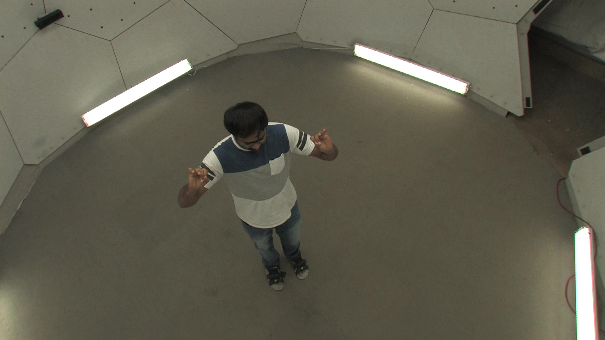
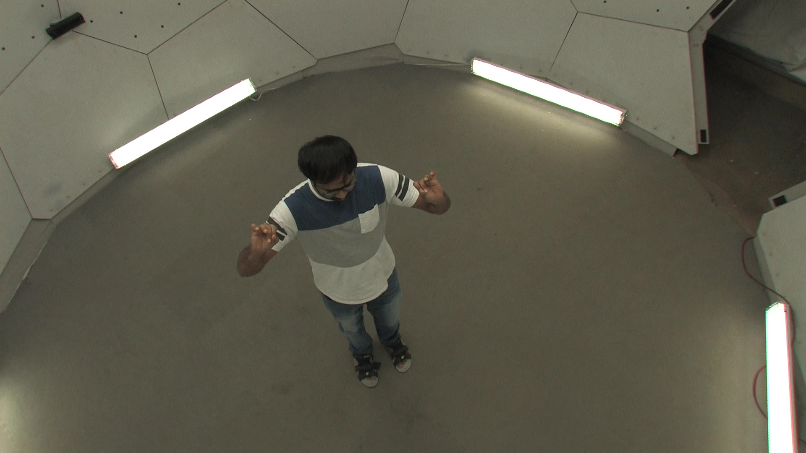

Virtual Correspondence
Humans as a Cue for Extreme-View Geometry
CVPR 2022
- 1 MIT
- 2 UofT
- 3 UIUC
- 4 Waabi
Play with sound. Video credit: Tom Buehler and Wei-Chiu Ma.
Can you tell the relationships between these matched pixels?
The head pixel and the face pixel in the leftmost images have completely different semantics and appearances, yet we can still associate them for 3D reasoning. Why, and how? In this paper, we present a novel concept to establish geometric relationships between pixels even if they are not semantically or visually similar.
Abstract
Recovering the spatial layout of the cameras and the geometry of the scene from extreme-view images is a longstanding challenge in computer vision. Prevailing 3D reconstruction algorithms often adopt the image matching paradigm and presume that a portion of the scene is co-visible across images, yielding poor performance when there is little overlap among inputs. In contrast, humans can associate visible parts in one image to the corresponding invisible components in another image via prior knowledge of the shapes. Inspired by this fact, we present a novel concept called virtual correspondences (VCs). VCs are a pair of pixels from two images whose camera rays intersect in 3D. Similar to classic correspondences, VCs conform with epipolar geometry; unlike classic correspondences, VCs do not need to be co-visible across views. Therefore VCs can be established and exploited even if images do not overlap. We introduce a method to find virtual correspondences based on humans in the scene. We showcase how VCs can be seamlessly integrated with classic bundle adjustment to recover camera poses across extreme views. Experiments show that our method significantly outperforms state-of-the-art camera pose estimation methods in challenging scenarios and is comparable in the traditional densely captured setup. Our approach also unleashes the potential of multiple downstream tasks such as scene reconstruction from multi-view stereo and novel view synthesis in extreme-view scenarios.
Classic Correspondence vs. Virtual Correspondence
Established Correspondences across Frames
Classic Correspondences (SuperGlue)

Virtual Correspondences

Our system takes the best of both worlds! We combine two types of correspondences and are able to produce accurate pose estimation across a wide range of scenarios. See Sec. 4 of the main paper for more details.
Pipeline

We first predict the 3D shape and pose of the basketball player from the left image. Then we cast a ray and record all the points it hits, i.e., the belly button and his back. While the two images barely overlap, the right image does observe the back of player. We can thus tell that the rays of the two pixels intersect at 3D and are virtual correspondences.
Interactive 3D Reconstruction Results
CMU Panoptic Studio

 



We do not show VCs here to avoid clutter.
CMU Panoptic Studio


We do not show VCs here to avoid clutter.
Mannequin Challenge (Teachers)
Mannequin Challenge (Girls)

Friends

FoV are empirically set to 25 degrees.
Michael Jordan
FoV are empirically set to 25 degrees.
Virtual Correspondence + Multi-view stereo
Input: two non-overlapping videos


Output: Reconstructed 3D Mesh
Citation (bibtex)
Acknowledgements
The authors would like to thank Ioan Andrei Bârsan, Siva Manivasagam, and Kelvin Wong for their feedback on the early draft, and Lucy "When I grow up I wanna be Lucy Chai" Chai for final proofreading. The website template is borrowed from Michaël Gharbi.